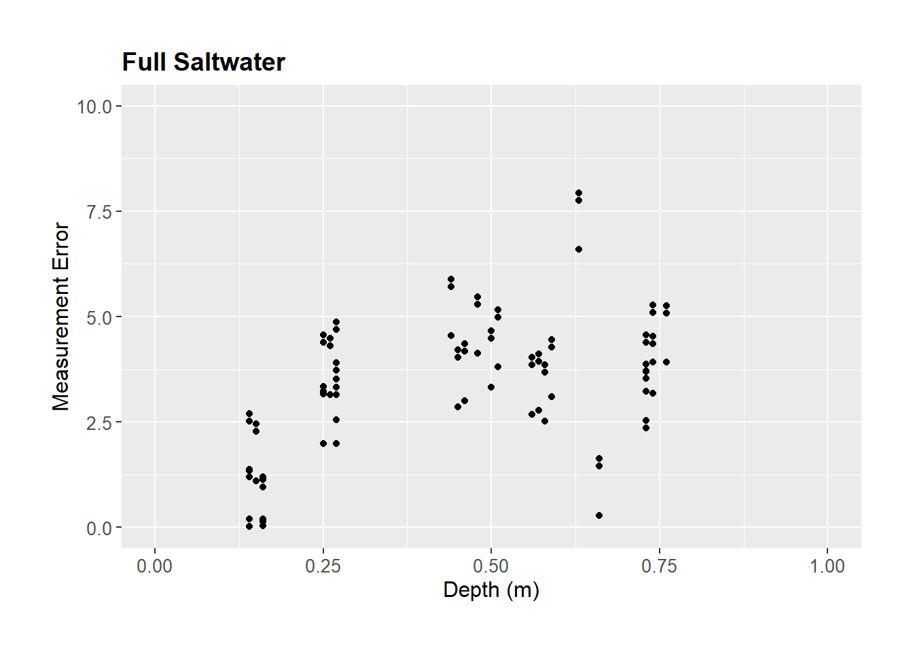
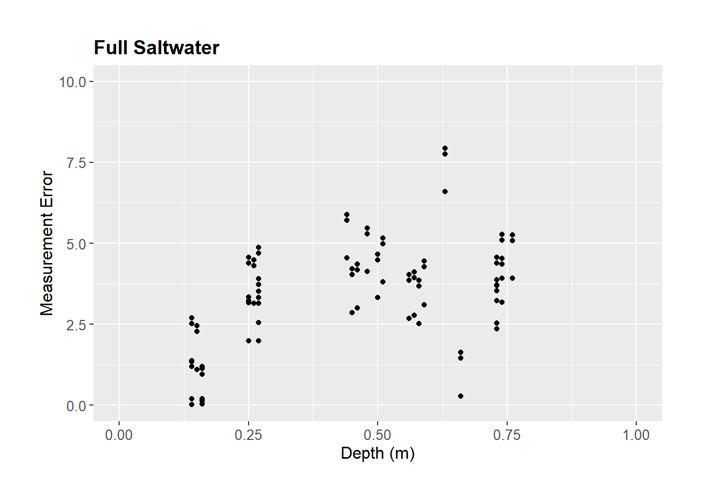
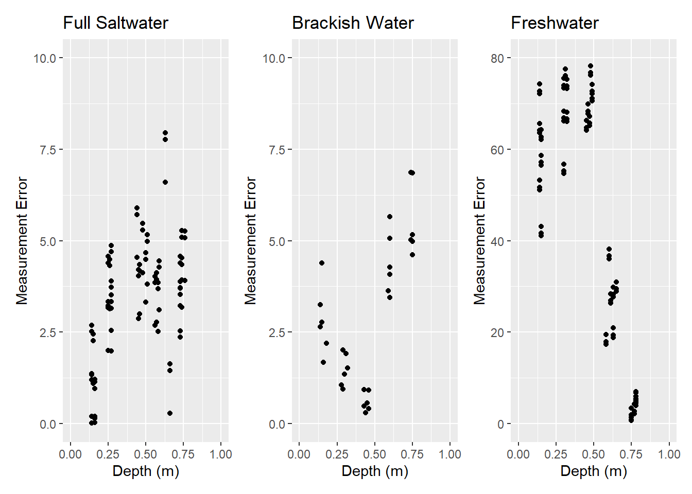
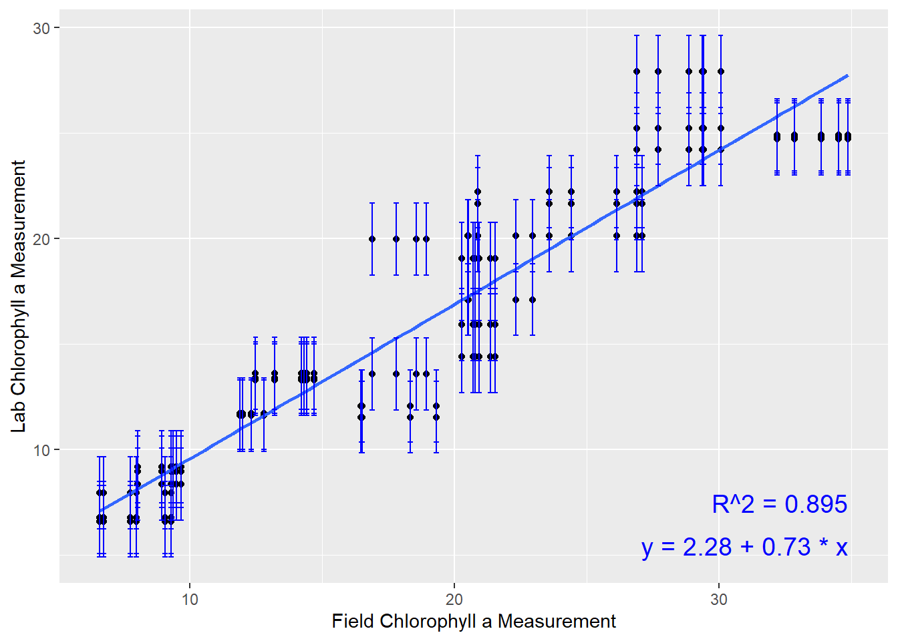
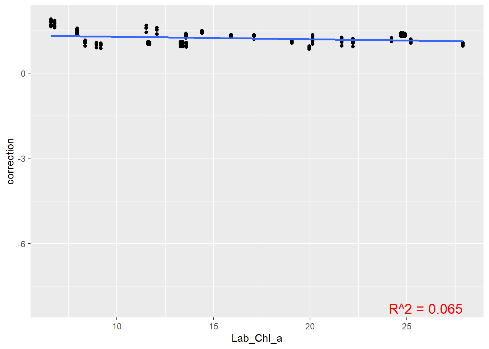
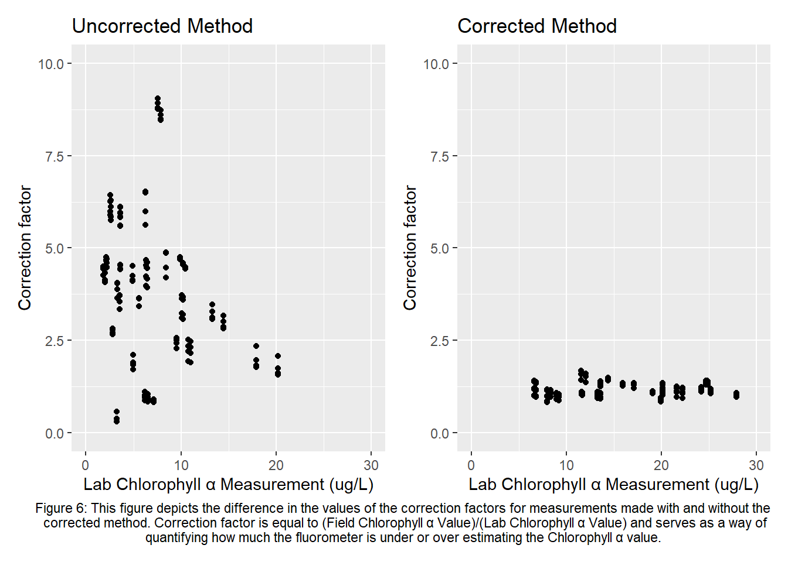

In Florida waterways, algae blooms have become a common threat to the environment and the citizens of Florida. Algae blooms release chemicals into the air and water that can harm humans and kill lots of wildlife, therefore, algae level monitoring has become a necessary protocol for environmental agencies. The current method of determining algae levels is not very time and labor efficient and involves taking samples from sites and analyzing them in a lab. Current field equipment has the capabilities to determine algae levels, however it’s accuracy remains an issue due to how it works. This project investigated the accuracy of this equipment and formulated a methodology to be able to gather reliable data on algae levels efficiently while in the field. With this new method, environmental agencies can determine algae levels and respond to them faster, as well as better investigate the causes of these blooms and the best actions to prevent it.
An important aspect of water quality is nutrient and algae levels, When there are lots of nutrients in the water, algae populations explode causing harmful algae blooms. It is very important that government and environmental agencies can quickly and accurately monitor levels to take action and inform citizens of dangers to air quality, drinking water, seafood, etc. The Environmental Protection Agency as well as the National Oceanic and Atmospheric Administration fund programs aimed at investigating the ecology, monitoring, event response, and prevention and control of harmful algal blooms. These programs emphasize the importance for scientists to have access to efficient methods of accurate data collection to be able to investigate and respond quickly, as well as to produce more data for better investigation. This project aims to support that same agenda by developing a methodology for using field fluorometers that gives scientists an accurate way to determine the algae level of a waterway without having to take any samples back to a lab for analysis.
The Manatee County Natural Resources department has two programs that assess water quality both off the coast of Tampa and Sarasota Bay, as well as in freshwater systems that lead into those bays. These programs are named the Regional Ambient Monitoring Program (RAMP) and Surface Water Ambient Monitoring Program (SWAMP). There are 80 sites in total between the two programs where water quality is regularly assessed. Chlorophyll a analysis must be carried out to determine the concentration of algae in the water during these assessments. This involves over 9 different processes from sample event to chlorophyll a determination that always take an entire work day. Because of the time and energy needed to do chlorophyll a analysis for all 80 sites, data is mostly only recorded once a month at each location. This means that current data collection procedures do not produce enough results to be able to investigate. With a method of gathering this data that involves simply visiting a site and dipping a fluorometer into the water you wish to test, much more can be done in the fight to protect our waterways. Manatee County can use this access to loads more data to develop highly accurate and up to date systems for not only monitoring algae levels across the county, but developing the best strategies to prevent and control algae populations.
Fluorometers serve as an efficient method to record values of chlorophyll a concentration in both fresh and saltwater, by emitting UV light and recording the irradiance emitted as a result of the light interaction with phytoplankton light harvesting complexes. Simply put, they send out light and record how much light is reflected back, which is representative of the density of phytoplankton in the water by chlorophyll a concentration. The more commonly used method uses a fluorometer, however this fluorometer requires preparation of samples and is laboratory bound. This method is used instead because its accuracy is verified and there are no interfering factors that can alter data. Despite this, the time needed to collect, transport, filter, freeze, and prepare samples makes this method too inefficient to consistently monitor algae levels. Therefore, it would be beneficial to investigate the data collection trends and results using the field based fluorometer to formulate a procedure for efficient algae monitoring with adequate data accuracy.
General
County vehicle
GPS/Cell phone
Stations map
Field data sheet and pens
In-Situ Data Collection
Eureka Manta2 multiprobe
County laptop with Manta2 control software
Manta2 underwater cable
Bluetooth connection device
Storage/Calibration cup
Testing cup
Water Sample Collection
Water collection device (bucket, dipping rod sampler, VanDorn Bottle)
500 mL amber Nalgene sample C bottles for chlorophyll (pre-labeled for each station)
Insulated cooler and ice
Vacuum pump with glass fiber filter
Acetone solution
Laboratory Fluorometer
Vortexer
Centrifuge
Vials
Collect data set from field measurements and collection that match with the lab analyzed chlorophyll a concentration, investigate any trends, compare field to lab measurements.
Conduct field collection and measurement aimed at determining the correct depth for accurate measurements, analyze data and set depth requirements.
Determine range of algae levels that you are confident in field measurement accuracy.
Conduct any remaining investigations of confounding factors if found in previous data trends.
Employ depth requirements and range of confidence to create data set from field measurements and collection that match with the lab analyzed chlorophyll a concentration.
Investigate the relationship between field and lab measurements, determine correction formula.
Implement new field data collection method to increase data collection.
Follow the steps and instructions below to correct fluorometer accuracy and develop a method of efficient data collection. The steps below match the timeline of goals outlined above. Find the instructions for in-situ data collection, sample collection, chlorophyll a analysis, and data formatting below in “Common Procedures”.
Uncorrected Data Collection
Conduct in-situ data collection and sample collection at site
Conduct chlorophyll a analysis in laboratory
Conduct data formatting
Using a scatterplot, investigate the relationship between water parameters/measurement statistics and the correction factor (this set of data will not show much due to variability from inaccuracy and improper methods of data collection, is important to show how variability is different between uncorrected and corrected methods of data collection)
Depth Analysis
Because the fluorometer determines the concentration of chlorophyll a based off of the light that is hitting its sensors, light coming from the sun can affect the measurement. To collect data that is free of interference from, the depth at which sunlight is no longer a factor must be determined. This depth may be different for environments with different conditions, for example, in my testing, different salinity/conductivity environments had different depth requirements. This is because of a couple of reasons. One is that freshwater is a lot more clear than brackish or salt water, so sunlight travels further in the water causing freshwater depth requirements to be at depths closer to the bottom. However, salt water, because of the higher conductivity, is not as clear, and so sunlight dissipates quicker. Along with this, certain salt water bottoms can be lightly colored which can affect the measurements. This makes closer to the surface the proper depth requirement for salt water. Brackish water, because of its mix between the two, shows a depth between the two depths of salt and fresh water.
Conduct water sample collection at site where data collection will be taken from (suggested to take twice the normal amount of samples, during my testing I took 6 samples per depth analysis)
Conduct rounds of in-situ data collection at separate depths until reach bottom/depth limit, keep differences between depths equal(My tests were conducting from depths 0.15-0.75 meters with intervals of 0.15 meters
Conduct data formatting
Create a column that is called “Error” and set it equal to the absolute value of the difference between the field determined chlorophyll a concentration and the lab determined concentration.
Create a scatterplot with X set as “Depth” and Y as “Error”, determine the depth at which error is the least and the range of error is the least, this is the depth at which you will record measurements
Repeat depth analysis at locations that represent different conditions, I analyzed the correct depth at locations of freshwater, brackish water, and salt water
Range of Confidence
One of the trends I began seeing when going through the data was that the higher the chlorophyll a concentration, the more error between the field and lab determined concentrations. Through analyzing data it became clear that when a bloom was occurring, the fluorometer was under estimating the concentration and had much more variability than normal, not only in the field determined concentration but also the lab determined concentration. Because of this, A range must be set of the chlorophyll a concentrations that the fluorometer can accurately read. To formulate this range, I took historic records of chlorophyll a in the waterways I was testing and determined a 95% confidence interval at 37.5 ug/L to be my upper limit. This is a confounding factor for this project but may not be for yours, make sure to investigate your data to find any confounding factors that are relevant to your project. The data at your disposal may be different and you will most likely have to formulate your own method to determining your own range.
Remaining Confounding Factors
As mentioned before, it is important to go through your data as you are collecting it and investigate any relationships that may end up being confounding factors you have to come up with requirements for. This may involve developing your own method to investigate these confounding factors.
Corrected Method Data Collection
Conduct in-situ data collection and sample collection at site
Use depth requirements set previously
Only include observations within range of confidence
Follow any other requirements formed
Conduct chlorophyll a analysis in laboratory
Conduct data formatting
Correction Formula
Create a scatter plot with X set as the field determined chlorophyll concentration and Y set as the lab determined concentration
Set a linear trendline and determine the R squared value
Use trendline as correction formula, put field determined chlorophyll concentration in as X and Y will equal the corrected value
Implement new field data collection method to increase data collection
In-Situ Data Collection
Calibrate Manta2 multiprobe, including fluorometer pink post-it standardization
Depart for SWAMP stations
Connect Manta2 cable to Bluetooth device and pair Bluetooth device to county laptop and open Manta2 control software
Remove storage/calibration cup and place testing cup on the end of the Manta2 multiprobe
Drop Manta2 multiprobe into water, holding onto the cable, confirm data readings are stable, then click “Capture One Line of Data to PC with Annotation” and note the station number and the depth measured
Pull Manta2 multiprobe out of the water, place storage/calibration cup with water on the end of the probe.
Write down any necessary notes, pack up and repeat at next station
Once all stations have been tested, save snapshot files to computer for statistical analysis
Water Sample Collection
Prepare 500 mL sample bottles with appropriate labels for each station
Prepare insulated cooler with ice and place bottles inside and load into county vehicle
Depart for SWAMP stations
Gather bottle labeled for specific station, along with water collection device upon arrival
Rinse sample bottles 3 times with water being collected
Pour collected water sample into 500 mL sample bottle, seal sample bottle
Place samples in insulated cooler with ice to preserve them while other SWAMP stations are visited for testing
Repeat steps 4-7 for each station being visited, then transport samples back to laboratory
Chlorophyll a Analysis
Once back in laboratory, lay out samples, let come to room temperature
Filter sample (125 mL) through a glass fiber filter using a vacuum pump
Store resulting filter in acetone solution (90%, 8 mL), vortex sample to dissolve filter into acetone, place in fridge for 2 hours minimum (can go to 24 hours max) (or frozen at or below -20 degrees Celsius for 20 days)
After 2 hours, vortex sample again, then centrifuge sample to settle any suspended solids
Pour sample into cuvette and place in fluorometer to get chlorophyll a concentration measurement and record results
Data Formatting
Import data from field measurements, keep any parameter recorded for investigation of trends
Create a column that notes the station/location where the measurement was made, as well as a column for the lab determined chlorophyll a concentration
Duplicate each observation/row for how many samples were analyzed, make a column that notes the replicate number for each observation
Enter lab determined chlorophyll a concentrations, enter the different sample measurements in the different replicates rows
Create a column called “Correction Factor” and make that cell be equal to the field determined chlorophyll a concentration divided by the lab determined concentration


| Standard Deviation | Higher End CI |
|---|---|
| 11.36933 | 37.49641 |



[conclusion section]
Calibrating Eureka Manta2 Fluorometer
Post-It Chlorophyll a Calibration Method SOP
Eureka Submersible Fluorometer Calibration Manual
Eureka Submersible Fluorometer User Manual
Eureka Submersible Fluorometer Optical Specification Guide
Eureka Manta2 Multiprobe Manual
Field Sample Collection SOP
EPA Method 445.0 Chlorophyll a Determinations SOP